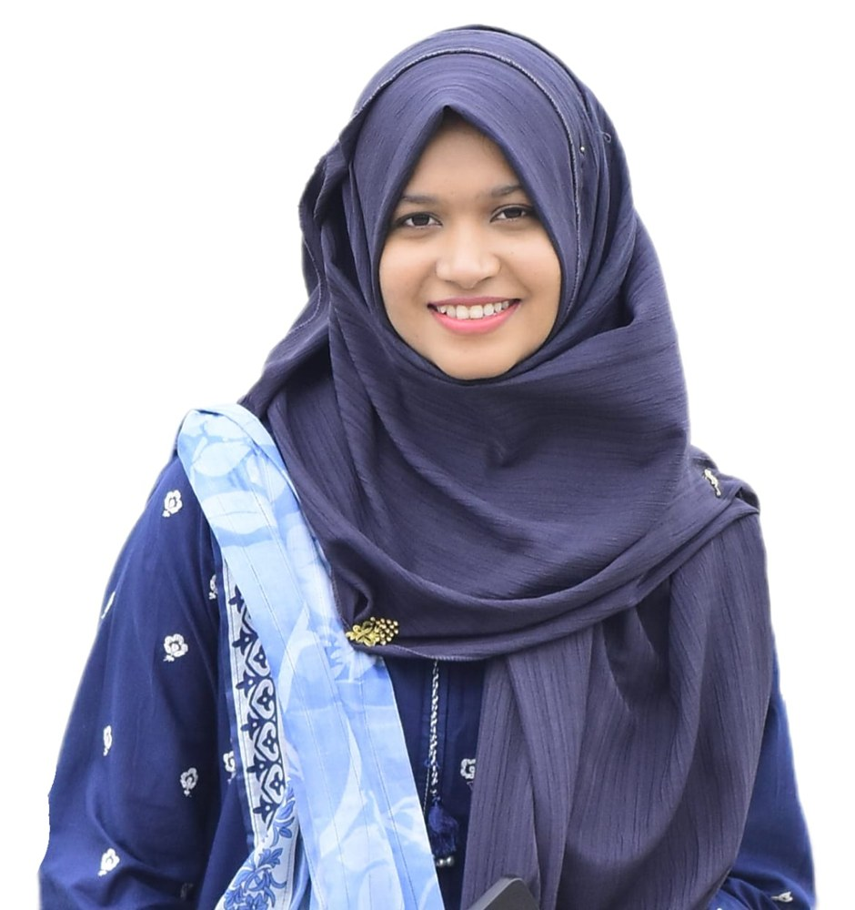

01AI · Final-year project
EduGuide AI
An AI-driven higher education recommendation system designed to help HSC students in Bangladesh explore suitable undergraduate majors using academic and preference-based information.
AI & Data Science · Software Development
I'm Umaiya Akter — an AI & Data Science student and developer interested in building intelligent systems, useful digital products, and experiences that feel considered from the first interaction to the last detail.
Based in Dhaka, Bangladesh · Open to meaningful opportunities

Umaiya AkterI enjoy the space where analytical thinking meets practical engineering — understanding a problem deeply, then shaping a solution people can actually use.
I’m drawn to the why behind the data and the craft behind the interface. My work moves between machine learning experiments, software systems, and product ideas with a clear purpose.
Currently completing my studies in AI & Data Science, I’m developing a strong foundation in Python, machine learning, data analysis, and full-stack development. I value clean implementation, thoughtful documentation, and steady iteration.
Outside the editor, I’m interested in research, emerging AI tools, and turning complex ideas into approachable experiences.
A selection of academic, personal, and collaborative projects. Each one represents a question explored, a skill strengthened, or a problem made a little clearer.
An AI-driven higher education recommendation system designed to help HSC students in Bangladesh explore suitable undergraduate majors using academic and preference-based information.
A digital library experience combining book discovery, reading, interactive puzzle challenges, game mechanics, and an AI-powered librarian.
VIEW PROJECT ↗A machine-learning project exploring credit risk prediction and classification workflows.
VIEW PROJECT ↗A computer-vision project focused on recognizing handwritten characters through a machine-learning workflow.
VIEW PROJECT ↗A web-based system for organizing election-related workflows and information.
VIEW PROJECT ↗A robotics project using Raspberry Pi 5, sensors, and motors for remote monitoring and movement control.
A smart-agriculture product concept focused on connecting farmers with useful services and information.
Browse additional experiments, coursework, and code as the collection continues to grow.
BROWSE REPOSITORIES ↗A growing toolkit across data, intelligent systems, software development, and creative problem-solving.
A short view of the academic path and the experiences shaping my technical interests.
Undergraduate studies at United International University, Bangladesh.
Building machine-learning projects, full-stack applications, and academic systems while strengthening practical engineering skills.
Exploring AI agents, model development, data-driven systems, and opportunities to contribute to meaningful research.
I'm always interested in connecting with people building useful things, exploring research, or looking for a curious developer to collaborate with.